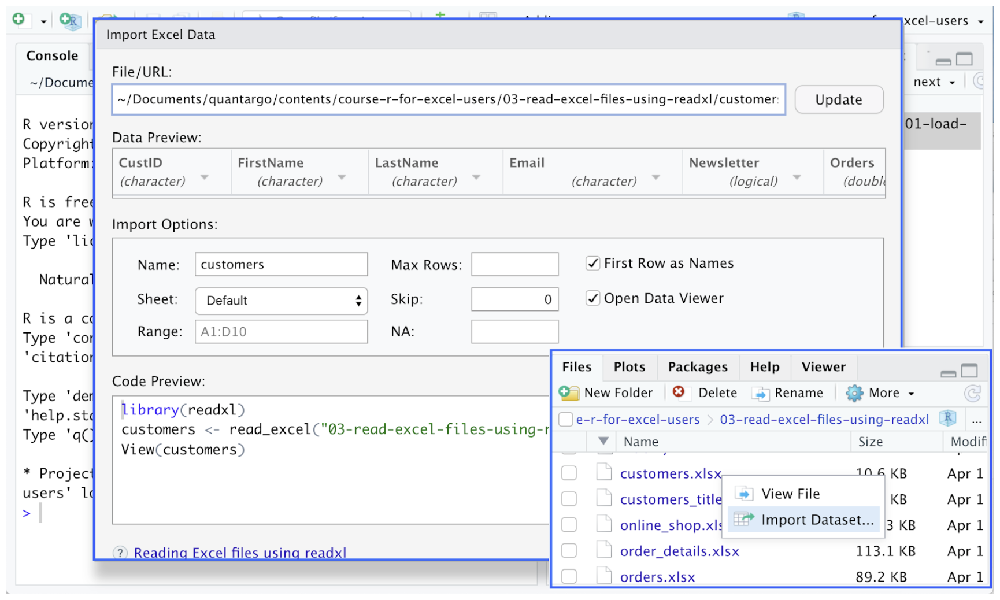
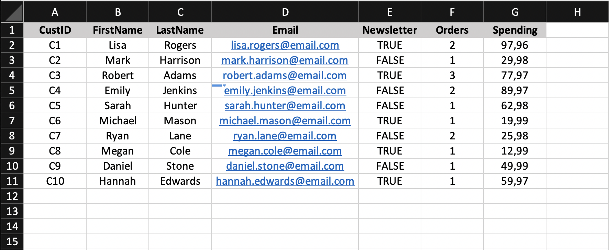
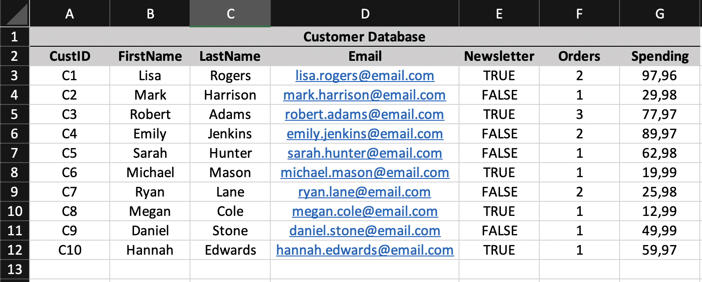

Load Excel Files as Data Frames
The read_excel() function provides an efficient solution to read Excel worksheets as tibbles. It is well integrated into the RStudio editor to make data imports from Excel even easier.
- Read Excel worksheets with read_excel()
- Get familiar with the default settings of read_excel()
- Use the skip argument to ignore title rows
- Use the col_names argument to handle column names
library(readxl)
read_excel(path = "<filename.xlsx>",
skip = ___,
col_names = ___)Introduction
The read_excel() function from the readxl package probably provides the quickest and most convenient way to read Excel files with R. It can be used for either the .xlsx or the (old) .xls file extensions and handles each file format accordingly. In addition, the function sets column names, data types and missing values automatically.
Excel file imports through readxl are also directly integrated into the RStudio development environment by just clicking on the file in the Files pane:

For these reasons, read_excel() is one of the most widely used functions for Excel file imports.
The read_excel() Function
library(readxl)
read_excel(path = "<filename.xlsx>",After loading the readxl package we can read our first excel file by calling the read_excel() with the path to the document we want to read. As an output, read_excel() returns the contents of the spreadsheet as a tibble.
In the following example, we read the Excel file orders.xlsx, containing information about the orders received by an online shop:
library(readxl)
read_excel(path = "orders.xlsx")# A tibble: 10 × 5
OrderID CustID TotalPrice Payment Status
<dbl> <chr> <dbl> <chr> <chr>
1 1 C1 35 Credit Card Delivered
2 2 C2 30 Debit Card Delivered
3 3 C4 50 Paypal Delivered
4 4 C3 13 Credit Card Returned
5 5 C5 63 Paypal Delivered
6 6 C6 20 Debit Card Delivered
7 7 C7 13 Paypal Delivered
8 8 C3 50 Debit Card Returned
9 9 C8 13 Credit Card Delivered
10 10 C4 40 Debit Card DeliveredSpreadsheet Shape
Excel spreadsheets can come in many forms with different layouts. In an optimal case the contents of a spreadsheet are organized in a tabular format with the first row defining the name of each column. Based on these principles, by default the read_excel() function will:
- read the smallest possible rectangular area from the spreadsheet that covers all non-empty cells.
- use the first row of content as column names for the output.
- handle empty cells as NA values.
As an example, let’s take a look at the structure of the following spreadsheet:

read_excel(path = "products.xlsx")# A tibble: 5 × 4
ItemID Description UnitPrice Stock
<chr> <chr> <dbl> <dbl>
1 I1 Socks (2 Pair) 13.0 25
2 I2 Sweatshirt 40.0 42
3 <NA> <NA> NA NA
4 I4 Caps 15.0 30
5 I5 Pants 50.0 23Data Types
Apart from automatically finding the relevant area of cells, read_excel() will also infer the data types of the columns based on the used Excel data types. Even if different formatting options have been used for numeric values like currencies and percentages read_excel() will still interpret them as numeric. This would not be the case for manually typed (string) percentage values since they change the Excel cell type to string and thus are interpreted as characters.
As an example, let’s take a look at the following spreadsheet:
 If we read this file using read_excel(), each column is assigned to the most suitable data type:
read_excel("customers.xlsx")# A tibble: 10 × 7
CustID FirstName LastName Email Newsl…¹ Orders Spend…²
<chr> <chr> <chr> <chr> <lgl> <dbl> <dbl>
1 C1 Lisa Rogers lisa.rogers@email… TRUE 2 98.0
2 C2 Mark Harrison mark.harrison@ema… FALSE 1 30.0
3 C3 Robert Adams robert.adams@emai… TRUE 3 78.0
4 C4 Emily Jenkins emily.jenkins@ema… FALSE 2 90.0
5 C5 Sarah Hunter sarah.hunter@emai… FALSE 1 63.0
6 C6 Michael Mason michael.mason@ema… TRUE 1 20.0
7 C7 Ryan Lane ryan.lane@email.c… FALSE 2 26.0
8 C8 Megan Cole megan.cole@email.… TRUE 1 13.0
9 C9 Daniel Stone daniel.stone@emai… FALSE 1 50.0
10 C10 Hannah Edwards hannah.edwards@em… TRUE 1 60.0
# … with abbreviated variable names ¹Newsletter, ²SpendingNote, that read_excel() cannot automatically identify, whether a column represents a factor variable and instead interprets it as a character. These columns must be manually converted with factor() after a spreadsheet has been read.
Optional Argument: skip
library(readxl)
read_excel(path = "<filename.xlsx>",
skip = ___,
col_names = ___)Excel files often contain header rows at the beginning of the spreadsheets which shall not be part of the table to be read. For example, the file customers_title.xlsx has the following layout:
 Reading it with a vanilla read_excel() function results in
read_excel(path = "customers_title.xlsx")# A tibble: 11 × 7
`Customer Database` ...2 ...3 ...4 ...5 ...6 ...7
<chr> <chr> <chr> <chr> <chr> <chr> <chr>
1 CustID FirstName LastName Email News… Orde… Spen…
2 C1 Lisa Rogers lisa.roge… TRUE 2 97.96
3 C2 Mark Harrison mark.harr… FALSE 1 29.98
4 C3 Robert Adams robert.ad… TRUE 3 77.97
5 C4 Emily Jenkins emily.jen… FALSE 2 89.97
6 C5 Sarah Hunter sarah.hun… FALSE 1 62.98
7 C6 Michael Mason michael.m… TRUE 1 19.9…
8 C7 Ryan Lane ryan.lane… FALSE 2 25.98
9 C8 Megan Cole megan.col… TRUE 1 12.99
10 C9 Daniel Stone daniel.st… FALSE 1 49.99
11 C10 Hannah Edwards hannah.ed… TRUE 1 59.97To exclude the first row containing Customer Database we can use the skip parameter and define the exact number of rows to be skipped at the beginning of the spreadsheet:
read_excel(path = "customers_title.xlsx", skip = 1)# A tibble: 10 × 7
CustID FirstName LastName Email Newsl…¹ Orders Spend…²
<chr> <chr> <chr> <chr> <lgl> <dbl> <dbl>
1 C1 Lisa Rogers lisa.rogers@email… TRUE 2 98.0
2 C2 Mark Harrison mark.harrison@ema… FALSE 1 30.0
3 C3 Robert Adams robert.adams@emai… TRUE 3 78.0
4 C4 Emily Jenkins emily.jenkins@ema… FALSE 2 90.0
5 C5 Sarah Hunter sarah.hunter@emai… FALSE 1 63.0
6 C6 Michael Mason michael.mason@ema… TRUE 1 20.0
7 C7 Ryan Lane ryan.lane@email.c… FALSE 2 26.0
8 C8 Megan Cole megan.cole@email.… TRUE 1 13.0
9 C9 Daniel Stone daniel.stone@emai… FALSE 1 50.0
10 C10 Hannah Edwards hannah.edwards@em… TRUE 1 60.0
# … with abbreviated variable names ¹Newsletter, ²SpendingOptional Argument: col_names
library(readxl)
read_excel(path = "<filename.xlsx>",
skip = ___,
col_names = ___)Another frequent issue is the use of common titles instead of separate names for each column:

read_excel(path = "sales.xlsx",
skip = 1,
col_names = FALSE)# A tibble: 5 × 2
...1 ...2
<chr> <dbl>
1 Socks (2 Pair) 3
2 Sweatshirt 3
3 T-Shirt 7
4 Caps 4
5 Pants 5In case you know the appropriate column names, it is also possible to define a character vector with the desired names:
read_excel(path = "sales.xlsx",
skip = 1,
col_names = c("Item", "UnitsSold"))# A tibble: 5 × 2
Item UnitsSold
<chr> <dbl>
1 Socks (2 Pair) 3
2 Sweatshirt 3
3 T-Shirt 7
4 Caps 4
5 Pants 5Handle Excel Files with Multiple Sheets
The read_excel() function can only read one Excel sheet at a time. However, Excel files often contain multiple worksheets. In these cases, we can rely on the excel_sheets() function to inspect the available worksheets and instruct read_excel() to read the appropriate one.
- Use excel_sheets() to retrieve all sheet names from an Excel file
- Use the sheet parameter in read_excel() to read a specific worksheet
- Read all worksheets using an sapply() loop
sheets <- excel_sheets(path = "<filename.xlsx>")
read_excel(path = "<filename.xlsx>",
sheet = "<sheetname>")
sapply(X = sheets, FUN = readxl, path = "<filename.xlsx>")Inspect the Available Excel Sheets
sheets <- excel_sheets(path = "<filename.xlsx>")
#read_excel(path = "<filename.xlsx>",
# sheet = "<sheetname>")
#sapply(X = sheets, FUN = readxl, path = "<filename.xlsx>")Excel files often contain multiple spreadsheets. These must have unique names in order to make an exact identification and selection possible. In the world of readxl, we can use the excel_sheets() function to inspect the available spreadsheets in an Excel file. As an output it returns a character vector with their names:
library(readxl)
excel_sheets("online_shop.xlsx")[1] "Customers" "Products" "Orders" Read a Specific Sheet
#sheets <- excel_sheets(path = "<filename.xlsx>")
read_excel(path = "<filename.xlsx>",
sheet = "<sheetname>")
#sapply(X = sheets, FUN = readxl, path = "<filename.xlsx>")Once we know which worksheet we want to read from an Excel file, we have two options. We can either use the name of the worksheet and define it as the sheet parameter:
read_excel(path = "online_shop.xlsx",
sheet = "Orders")# A tibble: 10 × 5
OrderID CustID TotalPrice Payment Status
<dbl> <chr> <dbl> <chr> <chr>
1 1 C1 35 Credit Card Delivered
2 2 C2 30 Debit Card Delivered
3 3 C4 50 Paypal Delivered
4 4 C3 13 Credit Card Returned
5 5 C5 63 Paypal Delivered
6 6 C6 20 Debit Card Delivered
7 7 C7 13 Paypal Delivered
8 8 C3 50 Debit Card Returned
9 9 C8 13 Credit Card Delivered
10 10 C4 40 Debit Card DeliveredAlternatively, we can use the index of the worksheet within the Excel file:
read_excel(path = "online_shop.xlsx",
sheet = 3)# A tibble: 10 × 5
OrderID CustID TotalPrice Payment Status
<dbl> <chr> <dbl> <chr> <chr>
1 1 C1 35 Credit Card Delivered
2 2 C2 30 Debit Card Delivered
3 3 C4 50 Paypal Delivered
4 4 C3 13 Credit Card Returned
5 5 C5 63 Paypal Delivered
6 6 C6 20 Debit Card Delivered
7 7 C7 13 Paypal Delivered
8 8 C3 50 Debit Card Returned
9 9 C8 13 Credit Card Delivered
10 10 C4 40 Debit Card DeliveredRead All Sheets Using sapply()
#sheets <- excel_sheets(path = "<filename.xlsx>")
#read_excel(path = "<filename.xlsx>",
# sheet = "<sheetname>")
sapply(X = sheets, FUN = readxl, path = "<filename.xlsx>")In case we want to read all available worksheets from an Excel file, we can make use of a simple loop structure. First we extract the names of the worksheets:
sheets <- excel_sheets("online_shop.xlsx")Next we use sapply() to interactively read each spreadsheet and return a list containing the spreadsheet table contents as items. For each iteration, sapply uses a worksheet name from sheets and reads it through read_excel(). To make this possible we also need to define the path to the Excel file:
collection <- sapply(X = sheets,
FUN = read_excel,
path = "online_shop.xlsx")As a result, sapply() will return a list of tibbles containing data from all spreadsheets. Afterwards, we can simply select a spreadsheet from the list:
collection$Customers# A tibble: 10 × 7
CustID FirstName LastName Email Newsl…¹ Orders Spend…²
<chr> <chr> <chr> <chr> <lgl> <dbl> <dbl>
1 C1 Lisa Rogers lisa.rogers@email… TRUE 2 98.0
2 C2 Mark Harrison mark.harrison@ema… FALSE 1 30.0
3 C3 Robert Adams robert.adams@emai… TRUE 3 78.0
4 C4 Emily Jenkins emily.jenkins@ema… FALSE 2 90.0
5 C5 Sarah Hunter sarah.hunter@emai… FALSE 1 63.0
6 C6 Michael Mason michael.mason@ema… TRUE 1 20.0
7 C7 Ryan Lane ryan.lane@email.c… FALSE 2 26.0
8 C8 Megan Cole megan.cole@email.… TRUE 1 13.0
9 C9 Daniel Stone daniel.stone@emai… FALSE 1 50.0
10 C10 Hannah Edwards hannah.edwards@em… TRUE 1 60.0
# … with abbreviated variable names ¹Newsletter, ²SpendingNote, that this approach makes it harder to handle individual issues of the spreadsheets and define different skip or col_names settings for example.
Read a Specific Range from an Excel Sheet
Excel sheets can contain vast amounts of information, out of which we might only require a specific set of rows and columns. The read_excel() function has a range parameter to restrict data input to a specific range of cells.
- Read only a range of cells using the range argument
- Apply selector functions to read a range of rows or columns
read_excel(path = "<filename.xlsx>",
sheet = "<sheetname>",
range = "<start>:<end>")Define a Range Selection
In addition to selecting a specific sheet, we can extend the read_excel() function with the range parameter to read only a given range of cells. Ranges need to be specified using the typical Excel format, defining a rectangular area of cells.
For example, to read the first six rows in column B and C from the Excel file online_shop.xlsx we can use
library(readxl)
read_excel(path = "online_shop.xlsx",
sheet = "Products",
range = "B1:C6")# A tibble: 5 × 2
Description UnitPrice
<chr> <chr>
1 Socks (2 Pair) € 12,99
2 Sweatshirt € 39,99
3 <NA> <NA>
4 Caps € 14,99
5 Pants € 49,99 Note that defining a specific range will overwrite settings such as skip. It will read exclusively the area defined by range, no matter if it contains any content.
Use Range Selector Functions
Reading a range of rows or columns from an Excel worksheet can be tedious when using an exact cell range definition. We need to know how many rows there are or how many columns there are in order to properly define the range. As a more convenient alternative, we can apply specific selector functions that automatically find all columns for a selection of rows and all observations belonging to a selection of columns.
To read only the first 4 rows, we can use the cell_rows() selector function to define the range of interest:
read_excel(path = "online_shop.xlsx",
sheet = "Products",
range = cell_rows(1:4))# A tibble: 3 × 4
ItemID Description UnitPrice Stock
<chr> <chr> <chr> <dbl>
1 I1 Socks (2 Pair) € 12,99 25
2 I2 Sweatshirt € 39,99 42
3 <NA> <NA> <NA> NASimilarly, to read only the first 2 columns, we can apply the cell_cols() selector function:
read_excel(path = "online_shop.xlsx",
sheet = "Products",
range = cell_cols(1:2))# A tibble: 5 × 2
ItemID Description
<chr> <chr>
1 I1 Socks (2 Pair)
2 I2 Sweatshirt
3 <NA> <NA>
4 I4 Caps
5 I5 Pants Coming up writexl package…